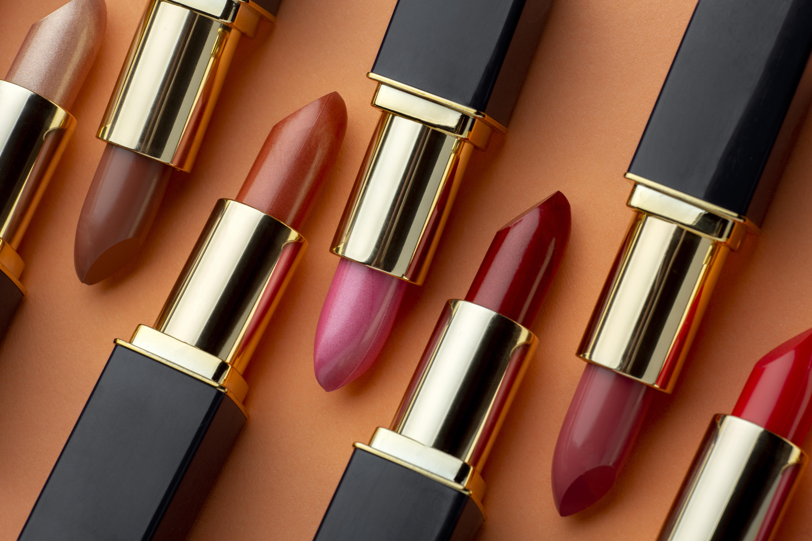

Descripción del producto
Nuestros labiales Cosmic Chroma ofrece una larga duración con una selección de tonos vibrantes y duraderos. Estos labiales están formulados para brindar un color intenso y una larga duración, manteniendo los labios suaves e hidratados.
Características principales
- Fórmula de larga duración: Labiales que permanecen intactos durante horas.
- Variedad de tonos: Amplia gama de colores para diferentes estilos.
- Acabado confortable: Textura suave y fácil de aplicar.
- Hidratación duradera: Ingredientes hidratantes para unos labios suaves.
Tipos de labiales
- Labiales mate: Acabado opaco y duradero.
- Labiales satinados: Acabado suave y brillante.
- Labiales cremosos: Textura hidratante y color intenso.